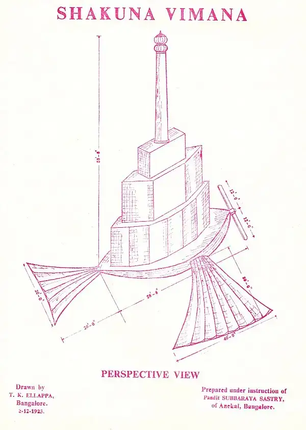
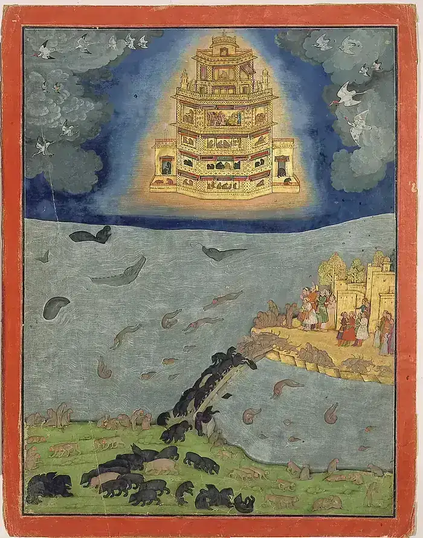

The objects
The Quimbaya culture of Colombia produced gold figurines, some of which are flat, triangular and have a vertical element at one end. They date to roughly 1000 AD and are part of a wider tradition of stylised animal and human pendants.
Maps, diagrams and images




The claim
The claim is that they depict aircraft or gliders: the triangular form is a delta wing, the vertical element is a tail fin, and the objects are aerodynamically shaped. Enthusiasts have built replicas that glide, which is presented as proof.
The replicas glide because they were built as gliders — with the body thinned, the wings enlarged and a stabiliser added. The original is a stylised bird or flying creature, part of a zoomorphic tradition, and many of the 'aircraft' features are common in insect and bird depictions of the region.
Documented: the figurines, their date and their cultural context.
Documented: the replicas, and the modifications made to them.
Not established: that the originals are aircraft.
The logical error: modifying an object until it flies, then claiming it was designed to.
The honest label: debunked — the argument fails on its own method.
Why it is in the archive
Because it is the case where the test was performed and the test was rigged, and because the rigging is visible in the replicas.
Open resources on this topic
- PapersOpen-access articles: DOAJ · PubMed Central · Internet Archive Scholar
- BooksPublic-domain and borrowable copies: Open Library · Project Gutenberg · Google Books · Internet Archive
Cite this page
Momin, S. (2026). The Quimbaya Aeroplanes. The Larger World Archive. https://drsamonline.github.io/LARGE_GLOBE/quimbaya-aeroplanes.htmlMomin, Sohil. “The Quimbaya Aeroplanes.” The Larger World Archive, 2026, https://drsamonline.github.io/LARGE_GLOBE/quimbaya-aeroplanes.html.Momin, Sohil. “The Quimbaya Aeroplanes.” The Larger World Archive, 2026. https://drsamonline.github.io/LARGE_GLOBE/quimbaya-aeroplanes.html.@misc{the2026quimbaya,
author = {Momin, Sohil},
title = {The Quimbaya Aeroplanes},
year = {2026},
howpublished = {The Larger World Archive},
url = {https://drsamonline.github.io/LARGE_GLOBE/quimbaya-aeroplanes.html},
note = {Last reviewed 20 November 2026}
}Last reviewed 20 November 2026 · Corrections policy · this page is not peer reviewed
Sources for this page
- Wikipedia, “Quimbaya culture” — the culture and its metalworken.wikipedia.org
- Wikipedia, “Pre-Columbian art” — the wider traditionen.wikipedia.org
- Wikipedia, “Out-of-place artifact” — the genreen.wikipedia.org
- Wikipedia, “Glider (aircraft)” — what the replicas areen.wikipedia.org